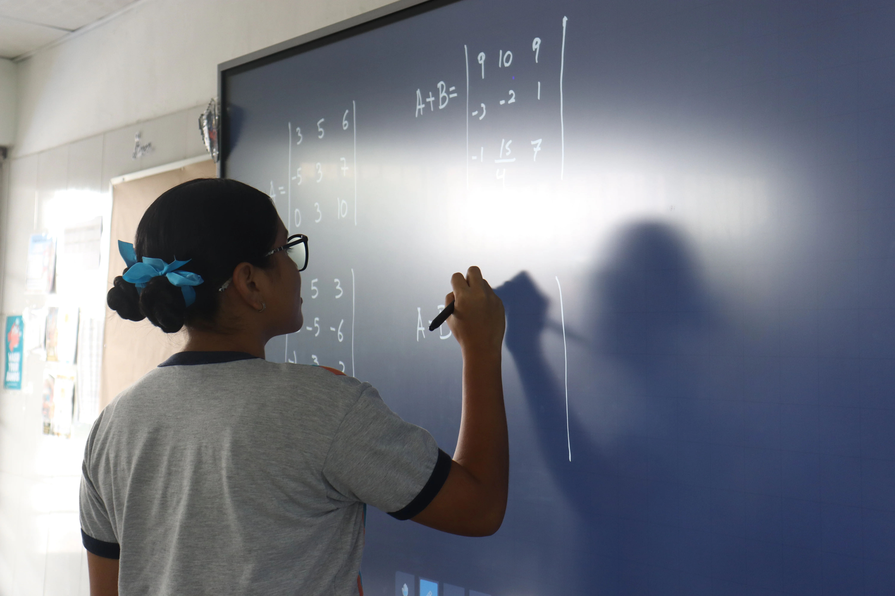

Bachillerato en Ciencias
“Rigor analítico, experimentación en laboratorio y pensamiento lógico para liderar en ingeniería, medicina y tecnología.”
Diseñado para estudiantes con vocación científica y analítica. Nuestro programa articula biología experimental, química orgánica e inorgánica, física aplicada y cálculo diferencial e integral, dotando al alumno de una preparación sólida para superar los exámenes de admisión más exigentes en facultades de ciencias de la salud, tecnología y exactas.
Prácticas de laboratorio con instrumental analítico y método experimental.
Dominio de matrices, funciones complejas y modelado matemático superior.
Cinemática, dinámica, termodinámica y electromagnetismo aplicados.
Investigación científica guiada por la ética y el respeto a la creación.